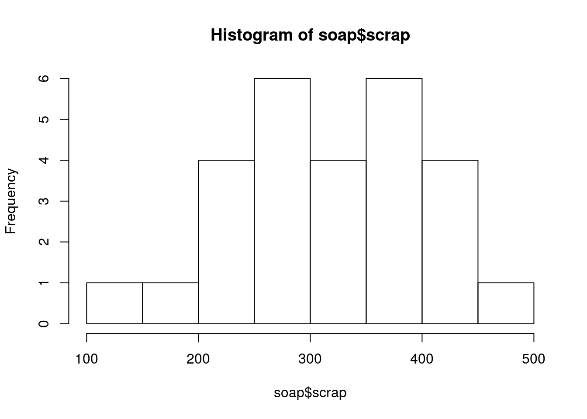
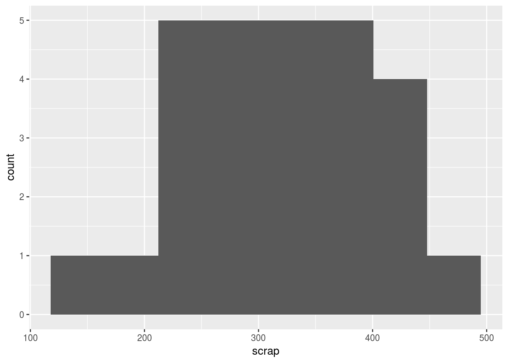
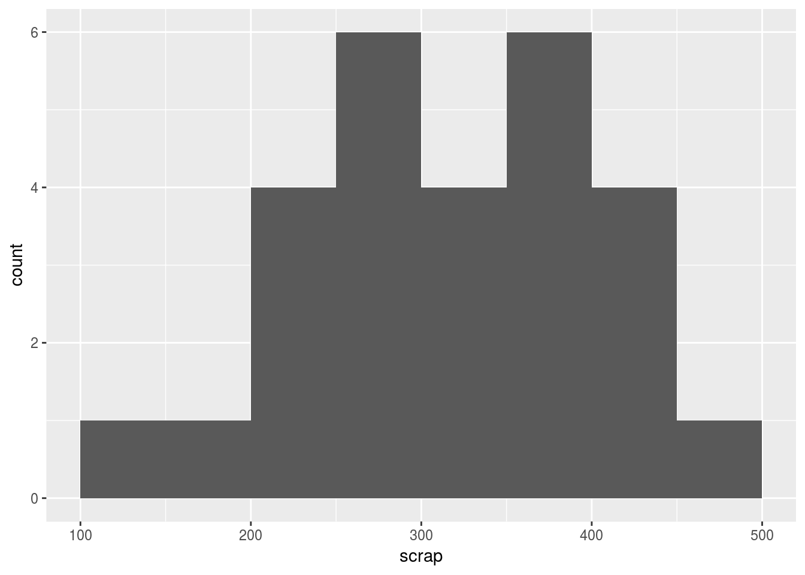
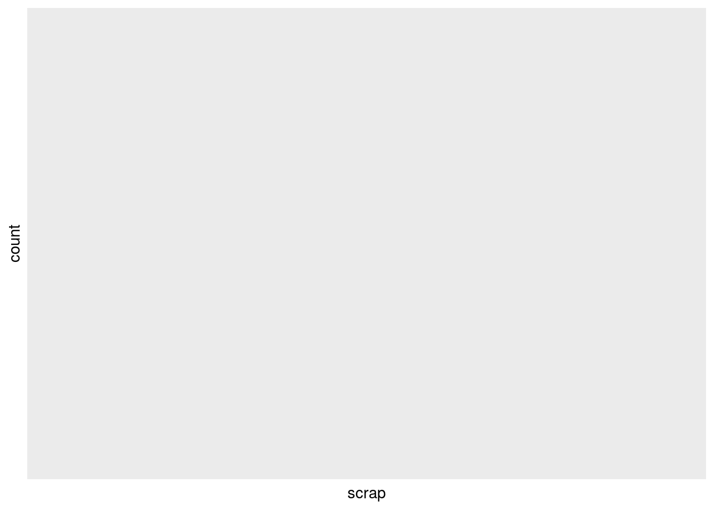
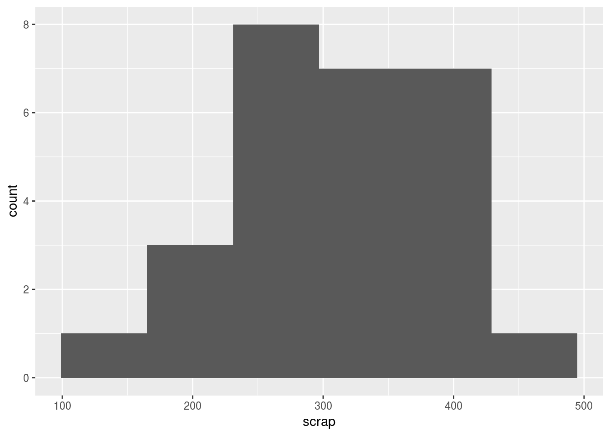
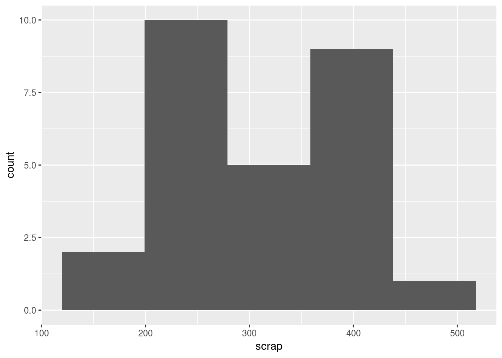

Histograms and bins
Most software, when you ask it to draw you a histogram, will choose a number of intervals (“bins”) for you. Base R is one of those. To illustrate, let’s read in some data:
library(tidyverse)## Loading tidyverse: ggplot2
## Loading tidyverse: tibble
## Loading tidyverse: tidyr
## Loading tidyverse: readr
## Loading tidyverse: purrr
## Loading tidyverse: dplyr## Conflicts with tidy packages ----------------------------------------------## filter(): dplyr, stats
## lag(): dplyr, statsmyurl="http://www.utsc.utoronto.ca/~butler/c32/soap.txt"
soap=read_delim(myurl," ")## Parsed with column specification:
## cols(
## case = col_integer(),
## scrap = col_integer(),
## speed = col_integer(),
## line = col_character()
## )soap## # A tibble: 27 x 4
## case scrap speed line
## <int> <int> <int> <chr>
## 1 1 218 100 a
## 2 2 248 125 a
## 3 3 360 220 a
## 4 4 351 205 a
## 5 5 470 300 a
## 6 6 394 255 a
## 7 7 332 225 a
## 8 8 321 175 a
## 9 9 410 270 a
## 10 10 260 170 a
## # ... with 17 more rowsThis is data from production of soap bars. There are two production lines, run at various different speeds, and the overall interest is in how the amount of scrap produced depends on the speed of the production line, and maybe on the production line itself. For now, though, we’ll focus just on the amount of scrap.
I’ve almost forgotten how to make a base R histogram, but I think it goes like this:
hist(soap$scrap)
This uses eight bins, with a bin width of 50. (I think the focus in base R was to choose bin boundaries that come in nice places, with the default being to use Sturges’ rule (below) to get the number of bins.)
In ggplot, you have to specify the number of bins yourself (or the bin width). I was looking in the help for geom_histogram to find out why, and I learned that Hadley Wickham is opposed to automatic selection of number of bins. In the help file under binwidth, it says:
You should always override this value, exploring multiple widths to find the best to illustrate the stories in your data.
I’m not quite sure where I stand on this. I am feeling that it would be nice to have a default to start from, but I see where Hadley is coming from in that if you provide a default, that’s what people will use without thinking.
Here’s how you specify a number of bins in ggplot:
ggplot(soap,aes(x=scrap))+geom_histogram(bins=8)
Even though we used the same number of bins, the histogram looks different because the bin boundaries are in different places.
The bin width is specified like this:
ggplot(soap,aes(x=scrap))+geom_histogram(binwidth=50)
This again looks very different, with a clear “hole” in the middle. There are some other options in geom_histogram, of which one is breaks, a vector of bin boundaries. So I can mimic the base R histogram this way:
b=seq(100,500,50)
b## [1] 100 150 200 250 300 350 400 450 500ggplot(soap,aes(x=scrap))+geom_histogram(breaks=b)
which has the same “Battersea Power Station” look as the base R histogram:

The Wikipedia page on the histogram mentions a number of “rules” for determining the number of bins or the bin width of a histogram. Two of these are due to Sturges and to Freedman-Diaconis. Let \(n\) be the number of data values, \(r\) be the inter-quartile range of the data, \(k\) be the number of bins, and \(h\) be the bin width. Then Sturges says
\[ k = \lceil \log_2 n \rceil + 1\] with the “ceiling” function meaning “round up to the next integer”. For our data, we have
n=length(soap$scrap)
ceiling(log(n,2))+1## [1] 6Freedman-Diaconis gives you a bin width instead:
\[ h = 2r/n^{1/3} \]
which we can calculate for our data using the n we got above:
r=IQR(soap$scrap)
2*r/n^(1/3)## [1] 79.66667These calculations are easily encapsulated in functions:
sturges=function(x) {
n=length(x)
ceiling(log(n,2))+1
}
sturges(soap$scrap)## [1] 6and
fd=function(x) {
n=length(x)
r=IQR(x)
2*r/n^(1/3)
}
fd(soap$scrap)## [1] 79.66667What geom_histogram claims to let you do is to supply a function to binwidth (though not bins, far as I can tell). I couldn’t get this to work:
ggplot(soap,aes(x=scrap))+geom_histogram(binwidth=fd)## Warning: Computation failed in `stat_bin()`:
## is.numeric(width) is not TRUE
I welcome comment on how to do this.
To use Sturges or Freedman-Diaconis as a default, you can do something like this:
k=sturges(soap$scrap)
ggplot(soap,aes(x=scrap))+geom_histogram(bins=k)
or
h=fd(soap$scrap)
ggplot(soap,aes(x=scrap))+geom_histogram(binwidth=h)
You don’t even have to write the functions yourself, because these can be found in R (from looking at the help for hist):
nclass.Sturges(soap$scrap)## [1] 6nclass.FD(soap$scrap)## [1] 5Note that this version of Freedman-Diaconis gives you a number of bins rather than a bin width.
Perhaps the moral of this story is that the look of a histogram can be very different depending on the number of bins or the bin width that you choose. So maybe Hadley Wickham was right after all. But I still think it’s good to have a place to start from, and nclass.Sturges or nclass.FD will do that.